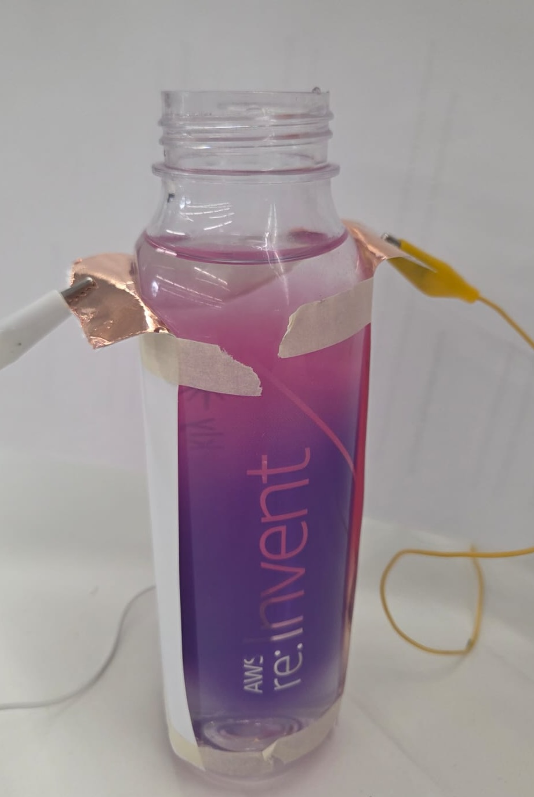
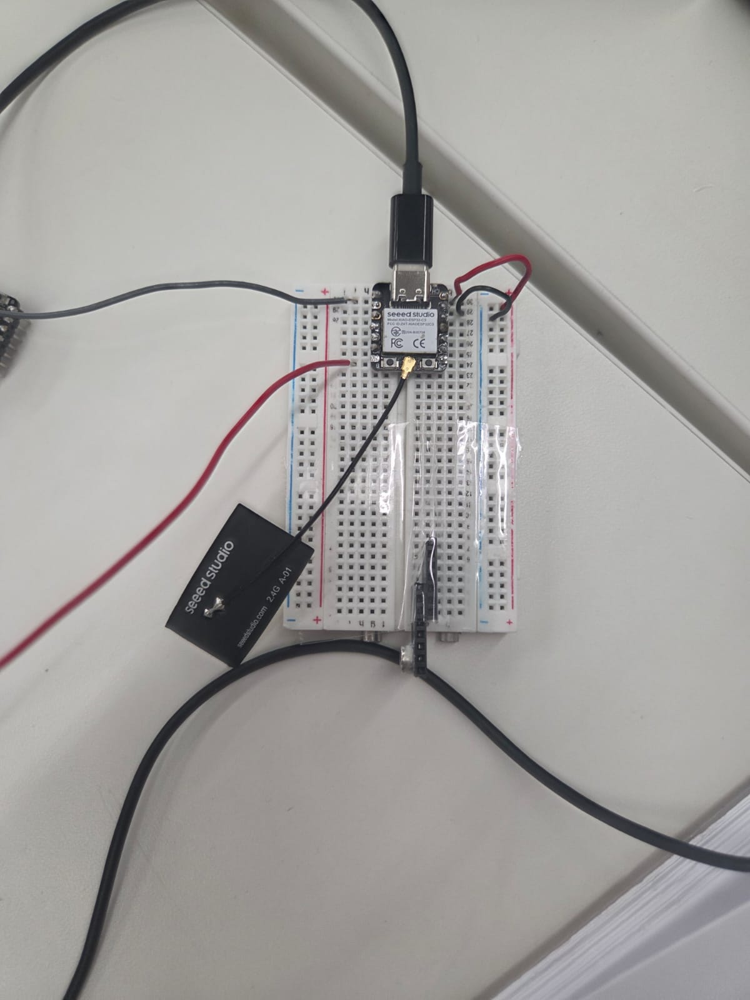
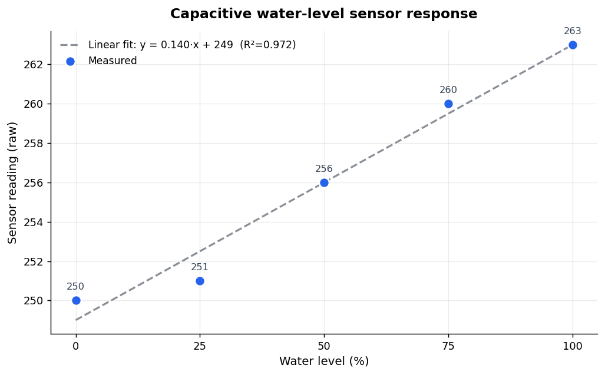
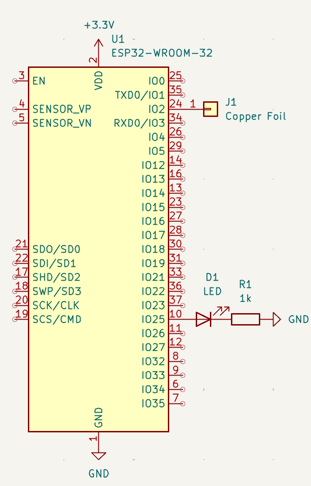

For this week's assignment we created a capacitive sensor to detect water level in a bottle. We used two copper foils and tested the readings while putting more water in the bottle (0, 25, 50, 75). We had some trouble on the first try with some interference, so for the second attempt and the readings below we avoided touching it, remained afar, and put water in it, since touching it, the cables, or others were interfering with the readings.

For the code, we followed the provided example and just connected the two copper foils directly to two pins on the XIAO.

| Level | Reading (x10000) |
| 0% | 250 |
| 25% | 251 |
| 50% | 256 |
| 75% | 260 |
| 100% | 263 |

Looking at the results, the readings go up steadily as we add more water, and the relationship is pretty linear. Each time we added water, the reading climbed by a similar amount, so the points line up close to a straight line.
This makes sense with how the sensor works once we changed the permittivity in the formula. The two foils with the bottle in between act like a capacitor, and water affects it a lot more than air does. So as the water level rises and covers more of the foils, the reading goes up in a steady, straight-line way instead of curving.
One thing we noticed is that the jump from 0% to 25% was smaller than the other steps. We think this is because at the very bottom the water isn't really touching the foils yet, or there was still a bit of interference on the empty reading. The rest of the points follow the line closely.
For the second sensor I decided to explore the capacitive touch sensor. I got really interested since I thought it was a great way to "pet" my robot that I'm building for my final assignment without using an actual button.
I had to use my ESP32 instead of the XIAO ESP32, since that version does have pins with touchRead functionality. touchRead is built into the ESP32, so I just read one of the touch-capable pins and it gives me a value that changes when I touch it. The number drops when there's contact, so I can use that to know when my robot is being "petted" without adding a button or any extra components.
When I touched the copper foil directly the reading dropped almost all the way down (from around 820 to around 20), but when I put a material in between, the cardboard or the plywood, the drop was way smaller (only about 90 points instead of 800).
Even so, the drop with a material in between is still big enough to detect, so it can still work as a "touch" for the robot.
Then, I used the readings to create an Arduino sketch that uses these values as thresholds to act as a button and be able to enable an LED light.
int LEDPin = 25;
void setup() {
pinMode(LEDPin, OUTPUT);
digitalWrite(LEDPin, LOW);
}
void loop() {
Serial.println(touchRead(T2)); // get value using T2
int value = touchRead(T2);
if(value < 720) {
digitalWrite(LEDPin, HIGH);
} else {
digitalWrite(LEDPin, LOW);
}
}

For the CNC Assignment I will design a board with KiCad and mill it in the lab with the CNC machine.